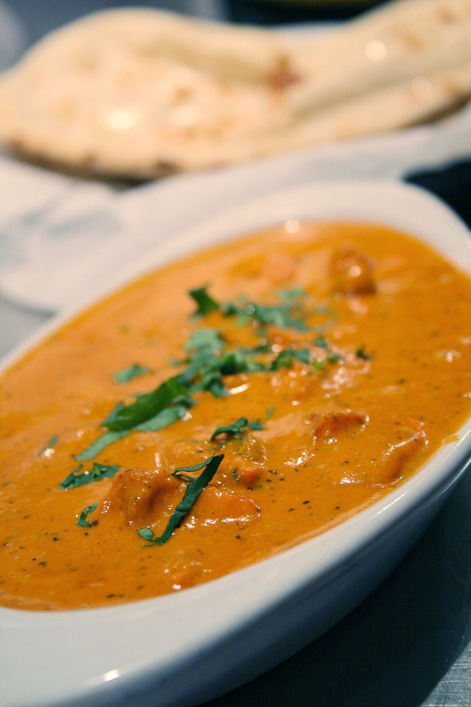
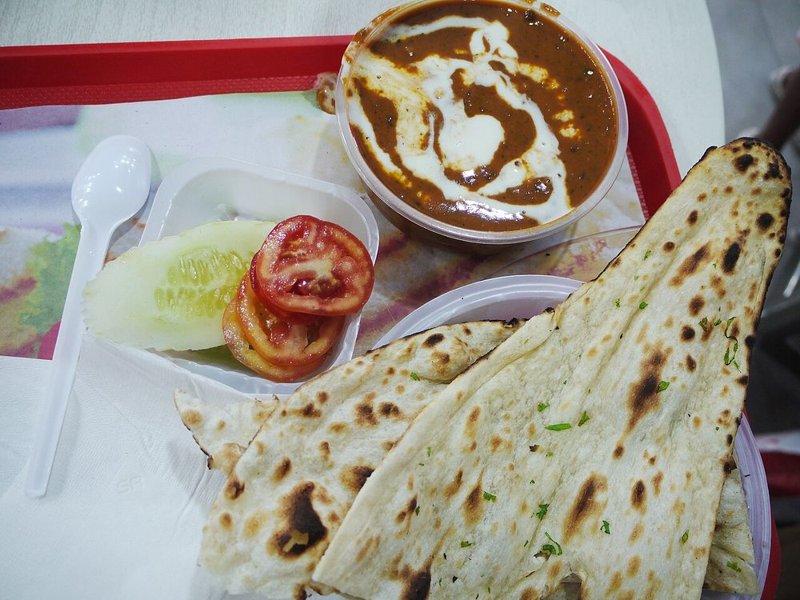
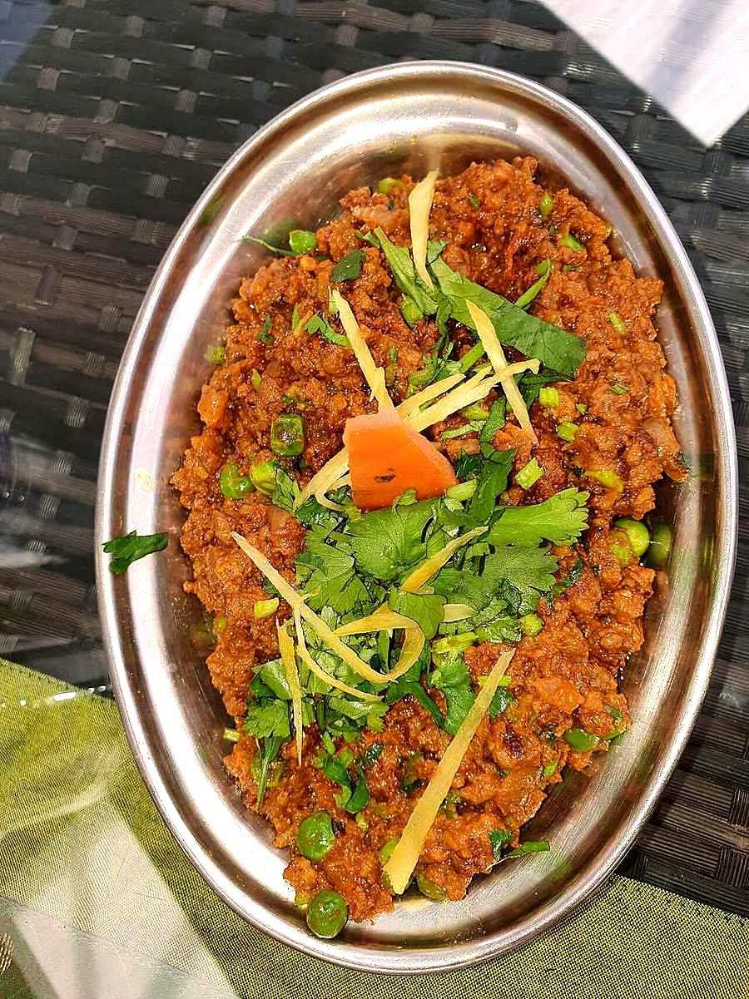
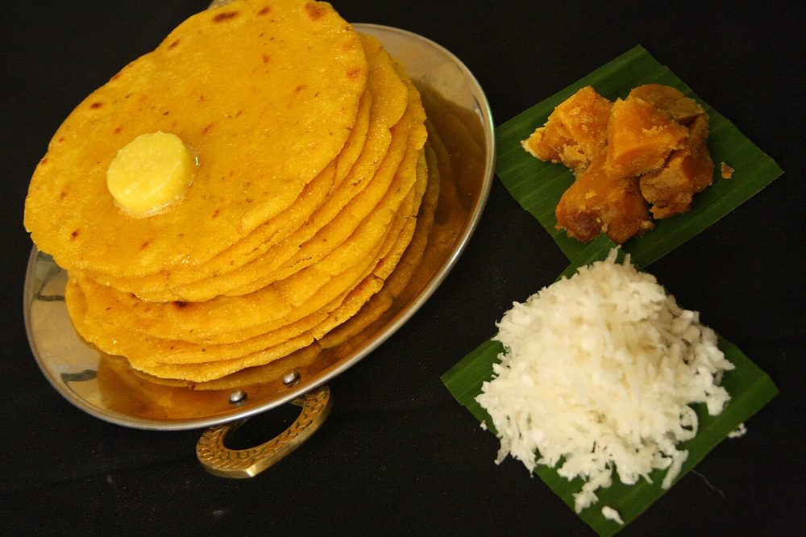
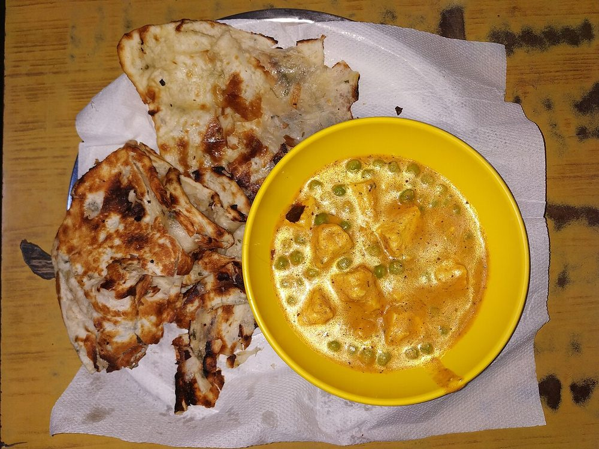
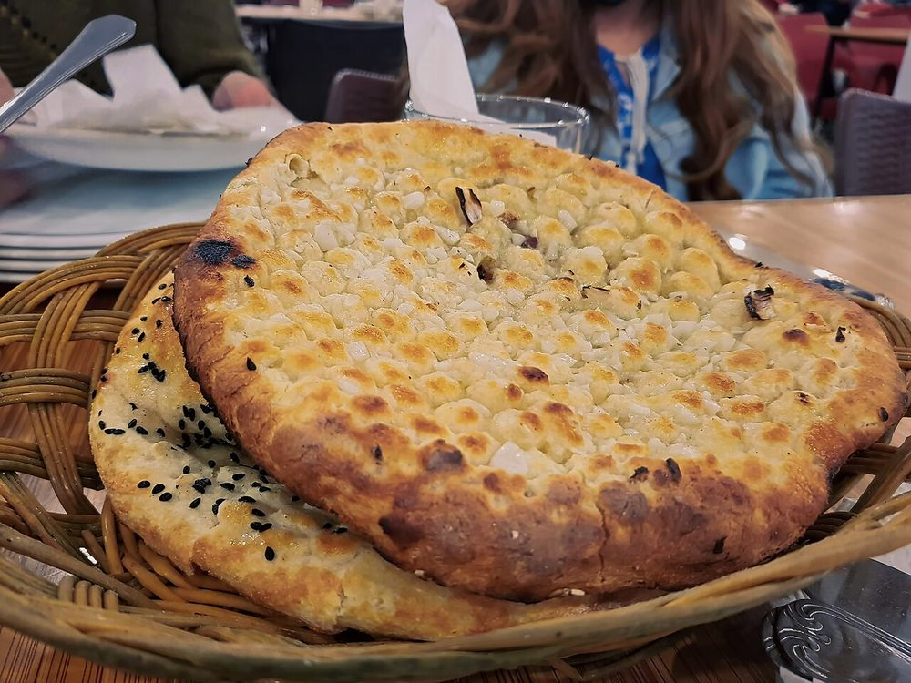
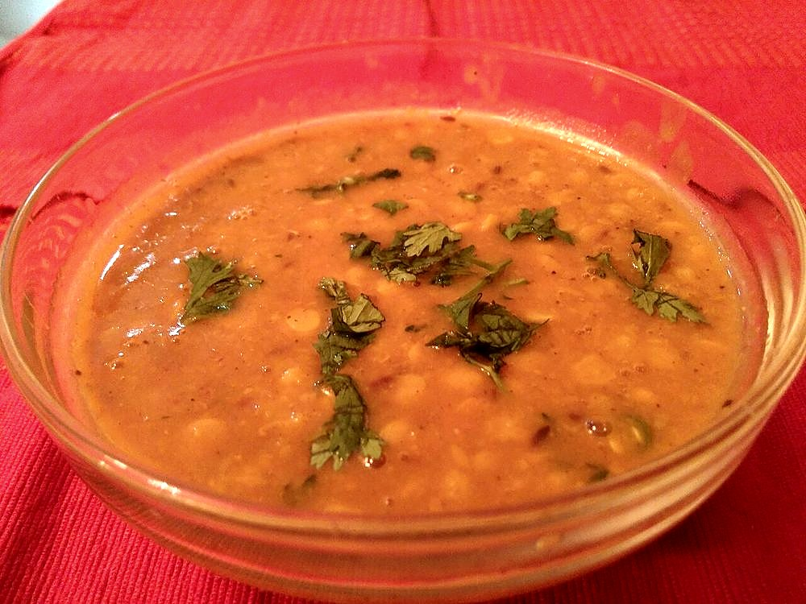

North India
Punjabi Cuisine
Tandoors, wheat, and dairy, plus the refugee kitchens of 1947 that turned Punjabi food into India's most recognized export.
Tandoors, wheat, and dairy, plus the refugee kitchens of 1947 that turned Punjabi food into India's most recognized export.
Punjab takes its name from panj āb (five rivers), and that geography built the cuisine long before any dynasty or border did. The Indus plain is some of the most fertile farmland in South Asia, and for centuries its staple grain has been wheat, alongside the dairy that comes naturally with extensive cattle and buffalo farming. Roti, paratha, naan, ghee, makkhan (butter), lassi, paneer. The core of Punjabi cooking is really the core of Punjabi agriculture.
The tandoor, the clay oven now inseparable from Punjabi food, has a longer history here than the Mughals: clay ovens of the same type turn up at Indus Valley sites in the region. What arrived with Central Asian and Mughal influence, by about the 16th century, was the repertoire cooked in it. The marinated meats and the leavened breads. Punjab made that central. Tandoori roti, naan, and tandoor-roasted meats became the backbone of a cooking style built around live fire and dairy-based marinades.
The single biggest turning point in Punjabi cuisine's history came in 19471. Partition displaced millions of Punjabis from what became West Punjab, Pakistan, and a large number resettled in Delhi. Among them were restaurateurs who rebuilt their trade from scratch, and it's this generation that is widely credited with inventing what most of the world now thinks of as "Indian food."
Butter chicken is the clearest example. The story, credited to Kundan Lal Gujral of Delhi's Moti Mahal restaurant2, is that leftover tandoori chicken was simmered in a tomato-butter gravy to keep it from drying out. That practical fix became a signature dish. Dal makhani, black lentils finished the same way with butter and cream, followed the same logic. Both dishes are, in culinary-history terms, remarkably recent. They're refugee-kitchen inventions from the late 1940s that went on to define an entire cuisine's global reputation.
Two Punjabi cuisines coexist today. One is the everyday rural table. Sarson da saag (mustard greens, slow-cooked with spices) eaten with makki di roti (cornmeal flatbread), along with simple dals, buttermilk, and pickles, food built for farming families and cold Punjab winters. The other is the richer, dairy-heavy restaurant repertoire of butter chicken, dal makhani, and paneer dishes, built for the diaspora and now exported worldwide. Both are authentically Punjabi. They just come from different centuries and different kitchens.


 Achari Chicken
Achari Chicken
 Aloo Chaat
Aloo Chaat
 Aloo Gobi
Aloo Gobi
 Aloo Methi
Aloo Methi
 Aloo Paratha
Aloo Paratha
 Aloo Tikki
Aloo Tikki
 Amritsari Fish
Amritsari Fish
 Amritsari Kulcha
Amritsari Kulcha
 Atte Ka Halwa
Atte Ka Halwa
 Baingan Bharta
Baingan Bharta
 Bharwa Karela
Bharwa Karela
 Bhindi Masala
Bhindi Masala
 Boondi Raita
Boondi Raita
 Bread Pakora
Butter Chicken
Bread Pakora
Butter Chicken
 Chana Masala
Chana Masala
 Chapati / Phulka
Chapati / Phulka

Chicken Tikka Chicken Tikka Masala
Chole
Chicken Tikka Masala
Chole
 Chole Bhature
Chole Bhature
 Cucumber Raita
Cucumber Raita
 Dahi Bhalla
Dahi Bhalla

Dal Makhani Dal Tadka
Dal Tadka
 Egg Bhurji
Egg Bhurji
 Egg Curry
Egg Curry
 Fish Tikka
Fish Tikka
 Gajar ka Halwa
Gajar ka Halwa
 Garlic Naan
Garlic Naan
 Ghar Da Chicken Curry
Ghar Da Chicken Curry
 Jalebi
Jalebi
 Jeera Rice
Jeera Rice
 Kadai Chicken
Kadai Chicken
 Kadai Paneer
Kadai Paneer

Keema Matar Laccha Paratha
Laccha Paratha
 Lauki Kofta
Lauki Kofta
 Mah Di Dal
Mah Di Dal

Makki di Roti Malai Kofta
Malai Kofta
 Mango Lassi
Mango Lassi
 Mango Pickle
Mango Pickle
 Masala Chai
Masala Chai

Matar Paneer Methi Malai Matar
Methi Malai Matar
 Mint-Coriander Chutney
Mint-Coriander Chutney
 Missi Roti
Missi Roti
 Mixed Vegetable Pakora
Mixed Vegetable Pakora
 Mooli Paratha
Mooli Paratha

Naan Onion Pakora
Onion Pakora
 Palak Paneer
Palak Paneer
 Paneer Bhurji
Paneer Bhurji
 Paneer Butter Masala
Paneer Butter Masala
 Paneer Tikka
Paneer Tikka
 Papdi Chaat
Papdi Chaat
 Pindi Chana
Pindi Chana
 Pindi Chole
Pindi Chole

Punjabi Chana Dal Punjabi Kadhi Pakora
Punjabi Kadhi Pakora
 Rajma Chawal
Rajma Chawal
 Samosa
Samosa
 Sarson ka Saag
Sarson ka Saag
 Seekh Kebab
Seekh Kebab
 Shahi Paneer
Shahi Paneer
 Sweet or Salted Lassi
Sweet or Salted Lassi
 Tamarind-Date Chutney
Tamarind-Date Chutney
 Tandoori-Style Chicken
Tandoori-Style Chicken
Not cooking tonight?
Tell us what is in your kitchen, and Khaana will help you cook an authentic Indian meal.